Ученикът рисува в Piskel в точния размер и слага файла на мястото от колона „Файл“. Играта сама я взима вместо временната.
След като сложите нови картинки, пуснете kartinki.bat, за да се обнови тази страница.
| Сега | Какво е | Файл | Размер | Къде е описано | Статус |
|---|
 | Под от дъски | assets/floor.png | 64 × 64 | rules/krachma.md | временна |
 | Стена (цяла) | assets/wall.png | 64 × 96 | GAME_RULES 6 | нарисувана |
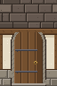 | Врата | assets/door.png | 64 × 96 | rules/krachma.md | нарисувана |
 | Прозорец в стена | assets/window.png | 64 × 96 | rules/krachma.md | нарисувана |
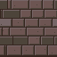 | Стена отгоре (странични и долни стени) - бесшевна във всички посоки | assets/wall_top.png | 64 × 64 | GAME_RULES 6 | нарисувана |
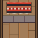 | Вход в стена, гледан отгоре (праг, черга) | assets/door_top.png | 64 × 64 | GAME_RULES 6 | нарисувана |
 | Тайлсет стени: ъгли, горен ръб, лице (квадратчета 64×64) | assets/tilesets/walls.png | 256 × 192 | GAME_RULES 6 | временна |
| Маса | assets/table.png | 64 × 64 | rules/krachma.md | нарисувана |
| Маса (завъртяна, дъски по дължина) | assets/table_right.png | 64 × 64 | rules/krachma.md | нарисувана |
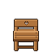 | Стол (гледа към нас) | assets/chair_down.png | 64 × 64 | rules/krachma.md | нарисувана |
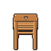 | Стол (с гръб към нас) | assets/chair_up.png | 64 × 64 | rules/krachma.md | нарисувана |
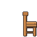 | Стол (гледа надясно) | assets/chair_right.png | 64 × 64 | rules/krachma.md | нарисувана |
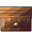 | Тезгях | assets/bar.png | 64 × 64 | data/furniture.json | нарисувана |
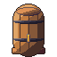 | Бъчва с канелка | assets/barrel.png | 64 × 64 | data/furniture.json | нарисувана |
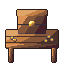 | Каса | assets/cash.png | 64 × 64 | data/furniture.json | нарисувана |
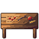 | Маса с дъска за рязане | assets/cutting_board.png | 64 × 64 | data/furniture.json | нарисувана |
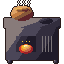 | Печка с гърне | assets/stove.png | 64 × 64 | data/furniture.json | нарисувана |
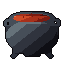 | Котел на огън | assets/cauldron.png | 64 × 64 | data/furniture.json | нарисувана |
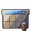 | Каменно корито | assets/sink.png | 64 × 64 | data/furniture.json | нарисувана |
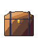 | Сандък | assets/chest.png | 64 × 64 | data/furniture.json | нарисувана |
 | Гише за кухнята | assets/counter_pass.png | 64 × 64 | rules/krachma.md | временна |
 | Мелница (ръчна) | assets/mill.png | 64 × 64 | rules/krachma.md | временна |
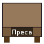 | Преса за грозде/плодове | assets/press.png | 64 × 64 | rules/krachma.md | временна |
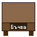 | Бъчва за ферментация | assets/ferment_barrel.png | 64 × 64 | rules/krachma.md | временна |
 | Казан за ракия | assets/still.png | 64 × 64 | rules/krachma.md | временна |
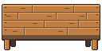 | Голяма маса | assets/table_big.png | 128 × 64 | rules/krachma.md | нарисувана |
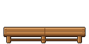 | Пейка зад масата (седналите гледат към нас), без облегалка | assets/bench.png | 128 × 64 | rules/krachma.md | нарисувана |
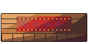 | Сцена с черга | assets/stage.png | 128 × 64 | data/furniture.json | нарисувана |
 | Легло (стая за нощуване) | assets/bed.png | 64 × 128 | rules/krachma.md | временна |
 | Фурна | assets/oven.png | 64 × 96 | rules/krachma.md | временна |
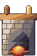 | Огнище | assets/fireplace.png | 64 × 96 | data/furniture.json | нарисувана |
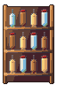 | Рафт с буркани | assets/shelf.png | 64 × 96 | data/furniture.json | нарисувана |
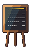 | Табло с меню | assets/menu_board.png | 64 × 96 | data/furniture.json | нарисувана |
| Чаша празна | assets/items/cup_empty.png | 32 × 32 | rules/krachma.md | временна |
| Чаша пълна | assets/items/cup_full.png | 32 × 32 | rules/krachma.md | временна |
| Чаша мръсна | assets/items/cup_dirty.png | 32 × 32 | rules/krachma.md | временна |
 | Халба бира | assets/items/mug_beer.png | 32 × 32 | rules/krachma.md | временна |
 | Чаша вино | assets/items/glass_wine.png | 32 × 32 | rules/krachma.md | временна |
 | Чашка ракия | assets/items/glass_rakia.png | 32 × 32 | rules/krachma.md | временна |
 | Чиния чиста | assets/items/plate_clean.png | 32 × 32 | rules/krachma.md | временна |
 | Чиния мръсна | assets/items/plate_dirty.png | 32 × 32 | rules/krachma.md | временна |
 | Купа чиста | assets/items/bowl_clean.png | 32 × 32 | rules/krachma.md | временна |
 | Купа мръсна | assets/items/bowl_dirty.png | 32 × 32 | rules/krachma.md | временна |
| Хляб | assets/items/bread.png | 32 × 32 | rules/krachma.md | временна |
 | Сирене | assets/items/cheese.png | 32 × 32 | rules/krachma.md | временна |
| Яйца | assets/items/eggs.png | 32 × 32 | rules/krachma.md | временна |
 | Боб | assets/items/beans.png | 32 × 32 | rules/krachma.md | временна |
| Лук | assets/items/onion.png | 32 × 32 | rules/krachma.md | временна |
| Морков | assets/items/carrot.png | 32 × 32 | rules/krachma.md | временна |
| Картоф | assets/items/potato.png | 32 × 32 | rules/krachma.md | временна |
 | Брашно | assets/items/flour.png | 32 × 32 | rules/krachma.md | временна |
 | Мляко | assets/items/milk.png | 32 × 32 | rules/krachma.md | временна |
 | Кисело мляко | assets/items/yogurt.png | 32 × 32 | rules/krachma.md | временна |
 | Домат | assets/items/tomato.png | 32 × 32 | rules/krachma.md | временна |
| Краставица | assets/items/cucumber.png | 32 × 32 | rules/krachma.md | временна |
| Чушка | assets/items/pepper.png | 32 × 32 | rules/krachma.md | временна |
 | Подправки | assets/items/spices.png | 32 × 32 | rules/krachma.md | временна |
 | Масло | assets/items/butter.png | 32 × 32 | rules/krachma.md | временна |
| Олио | assets/items/oil.png | 32 × 32 | rules/krachma.md | временна |
 | Сол | assets/items/salt.png | 32 × 32 | rules/krachma.md | временна |
| Дърва | assets/items/firewood.png | 32 × 32 | rules/krachma.md | временна |
 | Малц | assets/items/malt.png | 32 × 32 | rules/krachma.md | временна |
| Хмел | assets/items/hops.png | 32 × 32 | rules/krachma.md | временна |
| Грозде | assets/items/grapes.png | 32 × 32 | rules/krachma.md | временна |
 | Плодове | assets/items/fruit.png | 32 × 32 | rules/krachma.md | временна |
| Билки | assets/items/herbs.png | 32 × 32 | rules/krachma.md | временна |
 | Струни | assets/items/strings.png | 32 × 32 | rules/krachma.md | временна |
 | Шапка за бакшиш | assets/items/tip_hat.png | 32 × 32 | rules/krachma.md | временна |
| Боб чорба (купа) | assets/items/dish_bean_soup.png | 32 × 32 | rules/krachma.md | временна |
 | Пържени яйца | assets/items/dish_eggs.png | 32 × 32 | rules/krachma.md | временна |
| Филия със сирене | assets/items/dish_bread_cheese.png | 32 × 32 | rules/krachma.md | временна |
| Печени картофи | assets/items/dish_potatoes.png | 32 × 32 | rules/krachma.md | временна |
| Баница | assets/items/dish_banitsa.png | 32 × 32 | rules/krachma.md | временна |
| Шопска салата | assets/items/dish_salad.png | 32 × 32 | rules/krachma.md | временна |
 | Айрян | assets/items/drink_ayran.png | 32 × 32 | rules/krachma.md | временна |
 | Билков чай | assets/items/drink_tea.png | 32 × 32 | rules/krachma.md | временна |
| Лимонада | assets/items/drink_lemonade.png | 32 × 32 | rules/krachma.md | временна |
 | Боза | assets/items/drink_boza.png | 32 × 32 | rules/krachma.md | временна |
 | Икона: Гъдулка | assets/ui/inst_gadulka.png | 64 × 64 | rules/krachma.md | временна |
 | Икона: Кавал | assets/ui/inst_kaval.png | 64 × 64 | rules/krachma.md | временна |
 | Икона: Гайда | assets/ui/inst_gaida.png | 64 × 64 | rules/krachma.md | временна |
 | Икона: Тамбура | assets/ui/inst_tambura.png | 64 × 64 | rules/krachma.md | временна |
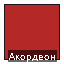 | Икона: Акордеон | assets/ui/inst_accordion.png | 64 × 64 | rules/krachma.md | временна |
| Звезда (качество) пълна | assets/ui/star_full.png | 16 × 16 | rules/krachma.md | временна |
 | Звезда (качество) празна | assets/ui/star_empty.png | 16 × 16 | rules/krachma.md | временна |
 | Нота за лента 1 (мини игра Свирене) | assets/ui/note_lane1.png | 64 × 32 | rules/krachma.md | временна |
 | Нота за лента 2 (мини игра Свирене) | assets/ui/note_lane2.png | 64 × 32 | rules/krachma.md | временна |
 | Нота за лента 3 (мини игра Свирене) | assets/ui/note_lane3.png | 64 × 32 | rules/krachma.md | временна |
 | Нота за лента 4 (мини игра Свирене) | assets/ui/note_lane4.png | 64 × 32 | rules/krachma.md | временна |
| Нота за лента 5 (мини игра Свирене) | assets/ui/note_lane5.png | 64 × 32 | rules/krachma.md | временна |
 | Фон на мини играта Свирене | assets/ui/rhythm_bg.png | 1024 × 576 | rules/krachma.md | временна |
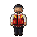 | Димитър – собственик | assets/persons/sobstvenik.png | 64 × 64 | data/persons/sobstvenik.json | нарисувана |
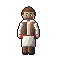 | Петър – кръчмар | assets/persons/krachmar.png | 64 × 64 | data/persons/krachmar.json | нарисувана |
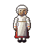 | Мария – готвачка | assets/persons/gotvach.png | 64 × 64 | data/persons/gotvach.json | нарисувана |
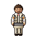 | Иван – сервитьор | assets/persons/servitior.png | 64 × 64 | data/persons/servitior.json | нарисувана |
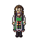 | Елена – гостенка в носия | assets/persons/elena.png | 64 × 64 | data/persons/chistach.json | нарисувана |
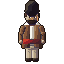 | Георги – снабдител | assets/persons/snabditel.png | 64 × 64 | data/persons/snabditel.json | нарисувана |
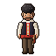 | Стоян – музикант | assets/persons/muzikant.png | 64 × 64 | data/persons/muzikant.json | нарисувана |
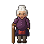 | баба Стана – жител | assets/persons/baba_stana.png | 64 × 64 | data/persons/baba_stana.json | нарисувана |
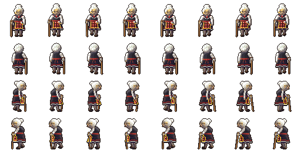 | баба Стана – ходене, 8 кадъра × 4 посоки (ред 1 надолу, 2 нагоре, 3 надясно, 4 наляво) | assets/persons/baba_stana_walk.png | 512 × 256 | data/persons/baba_stana.json | нарисувана |
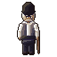 | дядо Коле | assets/persons/dyado_kole.png | 64 × 64 | data/persons/dyado_kole.json | нарисувана |
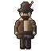 | Борис – ловец | assets/persons/lovets_boris.png | 64 × 64 | data/persons/lovets_boris.json | нарисувана |
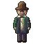 | Ники – пътник | assets/persons/patnik_niki.png | 64 × 64 | data/persons/patnik_niki.json | нарисувана |
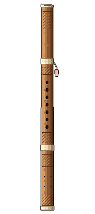 | Кавал - голям, отстрани на екрана в минииграта Свирене (платно 960x540) | assets/music/kaval.png | 192 × 432 | rules/krachma.md 10а | нарисувана |
 | Стоян (музикант) – ходене, 8 кадъра × 4 посоки (надолу, нагоре, надясно, наляво) | assets/persons/muzikant_walk.png | 512 × 256 | data/persons/muzikant.json | нарисувана |
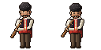 | Стоян свири на кавал, 2 кадъра (поза отпред) | assets/persons/muzikant_play.png | 128 × 64 | rules/krachma.md 10а | нарисувана |
 | Голям Стоян в минииграта Свирене (може и 192×288) | assets/music/muzikant_golyam.png | 192 × 192 | rules/krachma.md 10а | нарисувана |
 | Фон на минииграта Свирене (сцената в кръчмата, по-тъмна) | assets/music/fon_svirene.png | 960 × 540 | rules/krachma.md 10а | временна |
 | Гриф за кавала (3 ленти): парче, което се повтаря и тече надолу | assets/music/grif_kaval.png | 224 × 64 | rules/krachma.md 10а | временна |
 | Нота в 1-ва лента (червена, клавиш D) | assets/music/nota_0.png | 64 × 32 | rules/krachma.md 10а | временна |
 | Нота във 2-ра лента (жълта, клавиш F) | assets/music/nota_1.png | 64 × 32 | rules/krachma.md 10а | временна |
| Нота в 3-та лента (зелена, клавиш J) | assets/music/nota_2.png | 64 × 32 | rules/krachma.md 10а | временна |
| баба Стана играе хоро: 8 кадъра отпред (бастунът вдигнат, другата ръка държи съседа) | assets/persons/baba_stana_dance.png | 512 × 64 | rules/krachma.md 10а | нарисувана |
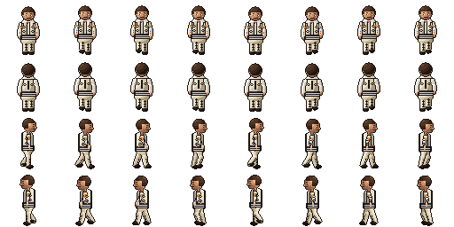 | Иван (сервитьор) в празнична носия – ходене, 8 кадъра × 4 посоки | assets/persons/servitior_walk.png | 512 × 256 | data/persons/servitior.json | нарисувана |
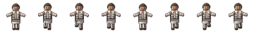 | Иван играе хоро: 8 кадъра отпред (двете ръце протегнати) | assets/persons/servitior_dance.png | 512 × 64 | rules/krachma.md 10а | нарисувана |
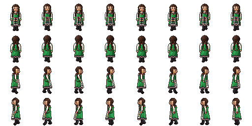 | Елена в носия (зелен сукман, бродирана престилка, плитки) – ходене, 8 кадъра × 4 посоки | assets/persons/elena_walk.png | 512 × 256 | data/persons/chistach.json | нарисувана |
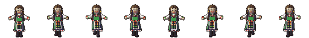 | Елена играе хоро: 8 кадъра отпред | assets/persons/elena_dance.png | 512 × 64 | rules/krachma.md 10а | нарисувана |
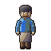 | Тодор – чистач | assets/persons/chistach.png | 64 × 64 | data/persons/chistach.json | нарисувана |
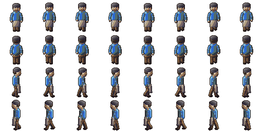 | Тодор – чистач – ходене, 8 кадъра × 4 посоки | assets/persons/chistach_walk.png | 512 × 256 | data/persons/chistach.json | нарисувана |
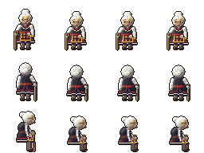 | баба Стана сяда: 3 реда (надолу, нагоре, надясно) × 4 кадъра (2 сяда, 2 седи) | assets/persons/baba_stana_sit.png | 256 × 192 | GAME_RULES 6 | нарисувана |
 | Пейка пред масата (седналите са с гръб към нас); може да е същата като bench.png | assets/bench_up.png | 128 × 64 | GAME_RULES 6 | нарисувана |
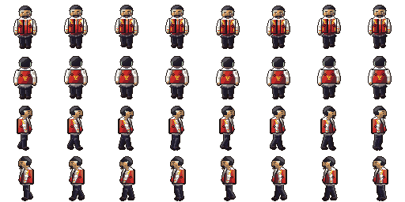 | Димитър (собственик, 50 г., пълен, с мустаци) в носия с червен елек – ходене, 8 кадъра × 4 посоки | assets/persons/sobstvenik_walk.png | 512 × 256 | data/persons/sobstvenik.json | нарисувана |
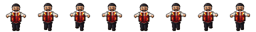 | Димитър играе хоро: 8 кадъра отпред | assets/persons/sobstvenik_dance.png | 512 × 64 | rules/krachma.md 10а | нарисувана |
| Ракия | assets/items/rakia.png | 32 × 32 | data/items.json | нарисувана |
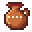 | Вино | assets/items/vino.png | 32 × 32 | data/items.json | нарисувана |
| Шопска салата | assets/items/shopska.png | 32 × 32 | data/items.json | нарисувана |
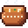 | Боб чорба | assets/items/bob.png | 32 × 32 | data/items.json | нарисувана |
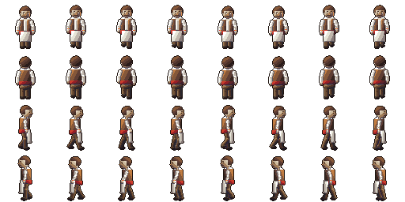 | Петър – кръчмар – ходене, 8 кадъра × 4 посоки | assets/persons/krachmar_walk.png | 512 × 256 | data/persons/krachmar.json | нарисувана |
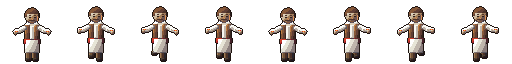 | Петър – кръчмар – хоро, 8 кадъра | assets/persons/krachmar_dance.png | 512 × 64 | rules/krachma.md 10а | нарисувана |
| Мария – готвачка – ходене, 8 кадъра × 4 посоки | assets/persons/gotvach_walk.png | 512 × 256 | data/persons/gotvach.json | нарисувана |
| Мария – готвачка – хоро, 8 кадъра | assets/persons/gotvach_dance.png | 512 × 64 | rules/krachma.md 10а | нарисувана |
| Тодор – чистач – хоро, 8 кадъра | assets/persons/chistach_dance.png | 512 × 64 | rules/krachma.md 10а | нарисувана |
| Георги – снабдител – ходене, 8 кадъра × 4 посоки | assets/persons/snabditel_walk.png | 512 × 256 | data/persons/snabditel.json | нарисувана |
| Георги – снабдител – хоро, 8 кадъра | assets/persons/snabditel_dance.png | 512 × 64 | rules/krachma.md 10а | нарисувана |
| Ники – пътник – ходене, 8 кадъра × 4 посоки | assets/persons/patnik_niki_walk.png | 512 × 256 | data/persons/patnik_niki.json | нарисувана |
| Ники – пътник – хоро, 8 кадъра | assets/persons/patnik_niki_dance.png | 512 × 64 | rules/krachma.md 10а | нарисувана |
| дядо Коле – ходене, 8 кадъра × 4 посоки | assets/persons/dyado_kole_walk.png | 512 × 256 | data/persons/dyado_kole.json | нарисувана |
| дядо Коле – хоро, 8 кадъра | assets/persons/dyado_kole_dance.png | 512 × 64 | rules/krachma.md 10а | нарисувана |
| Борис – ловец – ходене, 8 кадъра × 4 посоки | assets/persons/lovets_boris_walk.png | 512 × 256 | data/persons/lovets_boris.json | нарисувана |
| Борис – ловец – хоро, 8 кадъра | assets/persons/lovets_boris_dance.png | 512 × 64 | rules/krachma.md 10а | нарисувана |
| Кухня – фон на мини игрите | assets/minigames/kuhnya_fon.png | 320 × 180 | gotvene.py | нарисувана |
| Чаша (пълни се) | assets/minigames/rakia_chasha.png | 2112 × 60 | gotvene.py | нарисувана |
| Шише ракия (накланя се) | assets/minigames/rakia_shishe.png | 480 × 80 | gotvene.py | нарисувана |
| Бъчва с канелка | assets/minigames/vino_bachva.png | 256 × 112 | gotvene.py | нарисувана |
| Глинена каничка (пълни се) | assets/minigames/vino_kancha.png | 1012 × 46 | gotvene.py | нарисувана |
| Дъска за рязане | assets/minigames/shopska_daska.png | 150 × 44 | gotvene.py | нарисувана |
| Зеленчуци: цял, разрязан, на резени | assets/minigames/shopska_zelenchuci.png | 384 × 32 | gotvene.py | грешен размер е 480×32, трябва 384×32 |
| Нож (реже) | assets/minigames/shopska_noj.png | 256 × 56 | gotvene.py | нарисувана |
| Купа с шопска | assets/minigames/shopska_kupa.png | 840 × 50 | gotvene.py | нарисувана |
| Каменно огнище | assets/minigames/bob_ognishte.png | 168 × 52 | gotvene.py | нарисувана |
| Огън (3 размера) | assets/minigames/bob_ogan.png | 1296 × 48 | gotvene.py | нарисувана |
| Гърне с боб (мехурчета) | assets/minigames/bob_garne.png | 480 × 92 | gotvene.py | нарисувана |
| Лъжица (бърка) | assets/minigames/bob_lazhica.png | 960 × 92 | gotvene.py | нарисувана |
| Пара | assets/minigames/bob_para.png | 288 × 52 | gotvene.py | нарисувана |
| Хляб (самун) | assets/items/hlyab.png | 32 × 32 | data/items.json | нарисувана |
| Сирене | assets/items/sirene.png | 32 × 32 | data/items.json | нарисувана |
| Домат | assets/items/domat.png | 32 × 32 | data/items.json | нарисувана |
| Яйце | assets/items/yaytse.png | 32 × 32 | data/items.json | нарисувана |
| Самун – режат се филийки | assets/minigames/hlyab_samun.png | 1120 × 110 | gotvene.py | нарисувана |
| Филийка хляб | assets/minigames/hlyab_filiyka.png | 72 × 36 | gotvene.py | нарисувана |
| Чиния | assets/minigames/hlyab_chiniya.png | 90 × 40 | gotvene.py | нарисувана |
| Трева | assets/grass.png | 64 × 64 | селото (make_selo.py) | нарисувана |
| Трева с цветчета | assets/grass2.png | 64 × 64 | селото (make_selo.py) | нарисувана |
| Калдъръм | assets/path.png | 64 × 64 | селото (make_selo.py) | нарисувана |
| Къща (бяла) | assets/house_a.png | 256 × 256 | селото (make_selo.py) | нарисувана |
| Къща (жълта) | assets/house_b.png | 256 × 256 | селото (make_selo.py) | нарисувана |
| Кръчмата отвън | assets/krachma_out.png | 384 × 256 | селото (make_selo.py) | нарисувана |
| Сергия на пазара | assets/sergia.png | 128 × 128 | селото (make_selo.py) | нарисувана |
| Кладенец | assets/kladenets.png | 64 × 112 | селото (make_selo.py) | нарисувана |
| Дърво | assets/darvo.png | 128 × 160 | селото (make_selo.py) | нарисувана |
| Ограда | assets/ograda.png | 64 × 64 | селото (make_selo.py) | нарисувана |
| Цветя | assets/tsvetya.png | 64 × 64 | селото (make_selo.py) | нарисувана |